Freie Daten(spuren) aus dem All
wose
2017-10-21
Daten
(durch Beobachtungen, Messungen, statistische Erhebungen u. a. gewonnene) [Zahlen]werte, (auf Beobachtungen, Messungen, statistischen Erhebungen u. a. beruhende) Angaben, formulierbare Befunde
… aus dem All
Hilfsmittel/Messmittel/Sensoren
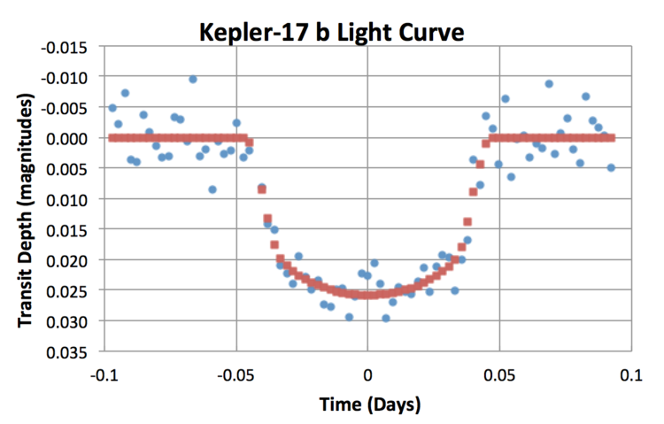
Ok cool… aber das Wichtigste fehlt!
ESA Copernicus Programm
Sentinel 1 a/b
Sentinel 1 a/b
- sonnensynchroner Orbit (SSO) 693 km
- 6d
- Synthetic Aperture Radar (SAR)
- 5.405 GHz
- Auflösung
- 5x20 m (Interferometric wide-swath)
- 5x5 m (Wave-mode images)
- 5x5 m (Strip map mode)
- 20x40 m (Extra wide-swath mode)
Sentinel 1 a/b
- Eisbeobachtung
- Landverformung
- Wellen und Strömungen
- Erdbeben
- Flutkarten
- Tankerunglück/Ölteppich
Larsen-Schelfeis
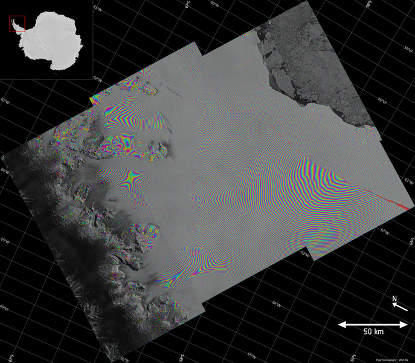
Larsen-Schelfeis
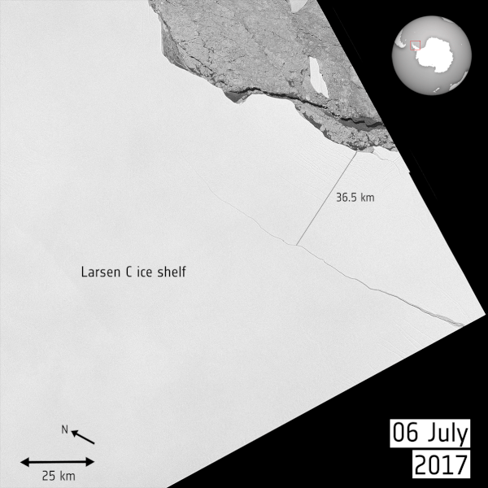
Mocoa Erdrutsch
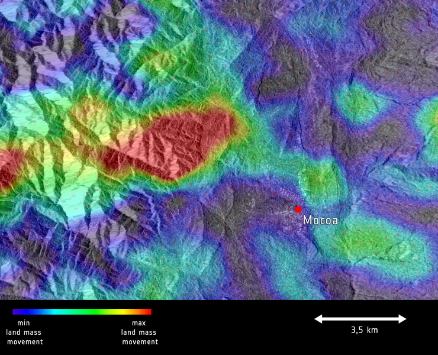
Myanmar
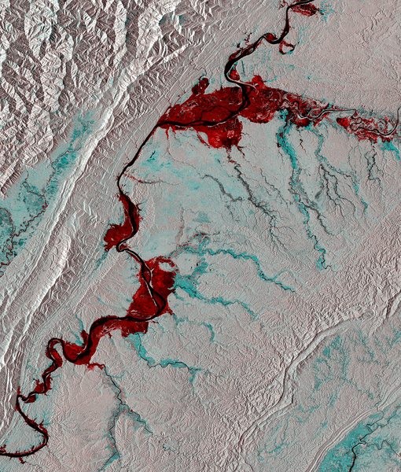
California's Highway 1
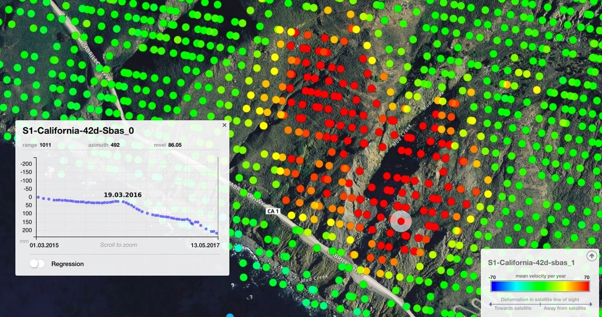
Sentinel 2 a/b
Sentinel 2 a/b
- sonnensynchroner Orbit (SSO) 786 km
- 7 Jahre
- Multispectral Imager (MSI)
- 5d
- 13 Bänder (443 - 2190 nm)
- Scanbreite 290 km
- Auflösung
- 10 m (4 sichtbare und NIR Bänder)
- 20 m (6 rote und kurzwellen IR)
- 60 m (3 Korrekturbänder)
Sentinel 2 a/b
- Landwirtschaftsbeobachtung
- Waldentwicklung
- Chlorophyllgehalt in Blättern
- Wassergehalt in Blättern
- Katastrophenschutz/hilfe
Kalamos, Griechenland
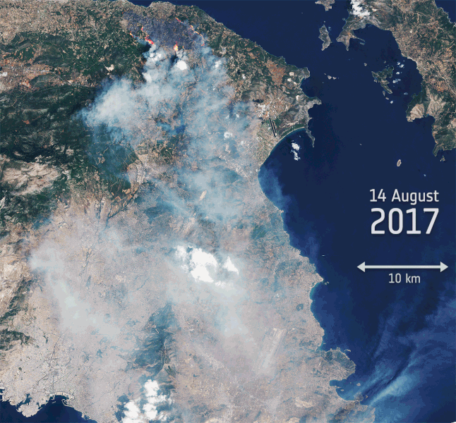
Lake MacKay, Australien
Oetztal Alpen
Barentssee
Saudi-Arabien
Saudi-Arabien
Sentinel 3 a/b
Sentinel 3 a/b
- sonnensynchroner Orbit (SSO) 815 km
- 7 (12) Jahre
- Ocean and Land Colour Instrument (OLCI)
- 2d
- 21 Bänder (400 - 1020 nm)
- Scanbreite 1270 km
- Sea and Land Surface Temperature Radiometer (SLSTR)
- 1d
- 9 Bänder (550 - 12000 nm)
- Scanbreite 1420 km / 750 km
- Synthetic Aperture Radar Altimeter (SRAL)
- 27d
Sentinel 3 a/b
- Meeresspiegelbeobachtung
- Meeresoberflächentemperatur
- Wasserqualität
- Eisdicke
Ophelia
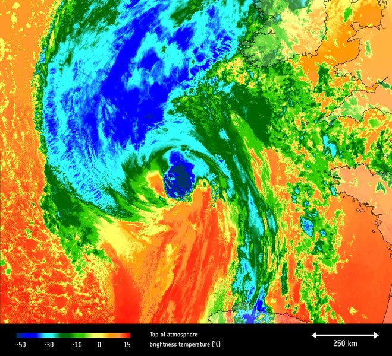
Globale Temperatur
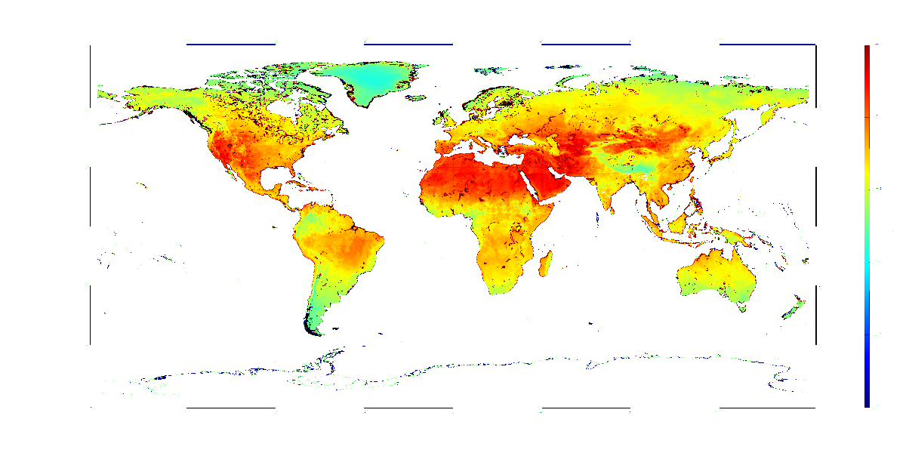
Meeresspiegel
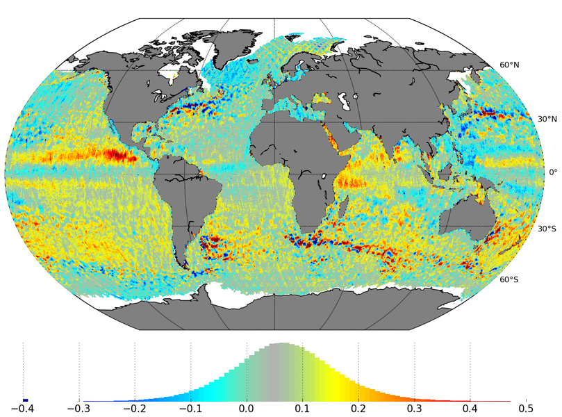
Sentinel-5p
Sentinel-5p
- sonnensynchroner Orbit (SSO) 824 km
- 7 (10) Jahre
- 1d
- Tropospheric Monitoring Instrument (Tropomi)
- Scanbreite 2600 km
- 270 - 495 nm
- 675 - 775 nm
- 2305 - 2385 nm
- Auflösung
- 7x3.5 km
Sentinel-5p
- Luftqualiät
- Konzentration von Spurengasen
- Stickstoffdioxid
- Ozon
- Methan
- Schwefeldioxid
- Kohlenmonoxid
- Formaldehyde
- Wolkenbildung/bewegung
- Klimaforschung
Simulierte Tropomi Daten
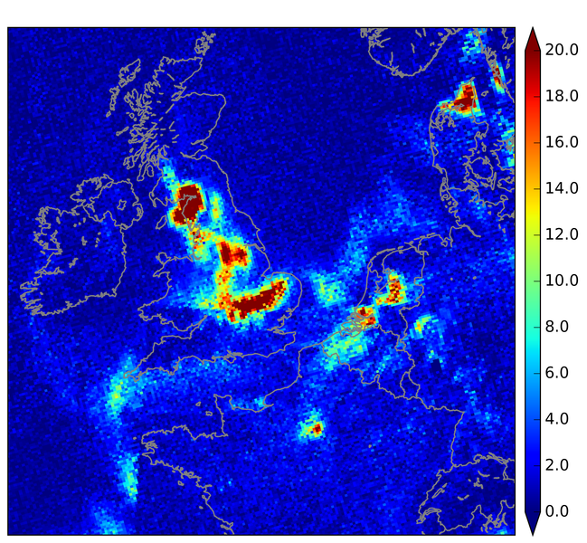
Sentinel 4
Sentinel 4
- geostationärer Orbit (GEO)
- 1h
- Spektrometer (UVN)
- 305 - 400 nm
- 400 - 500 nm
- 750 - 775 nm
- Auflösung
- 8 km
Sentinel 5
Sentinel 5
- sonnensynchroner Orbit (SSO) 830 km
- 3x7 Jahre
- 29d
- Spektrometer
- 270 - 370 nm
- 370 - 500 nm
- 685 - 773 nm
- 1590 - 1675 nm
- 2305 - 2385 nm
- Auflösung
- 7 km
Sentinel 6
Sentinel 6
- kein sonnensynchroner Orbit (LEO) 1336 km
- 5.5 (2) Jahre
- Poseidon-4 (SAR)
- AMR-C Climate-quality microwave radiometer
- GNSS-POD GPS/Galileo Empfänger
- DORIS
- Laser Retroreflector Array
- GNSS-RO
Demo
Demo 1 - NDVI

Demo 2
Links
- http://www.esa.int/spaceinimages/Images
- http://www.esa.int/spaceinvideos/Videos
- http://www.esa.int/spaceinvideos/Sets/Earth_from_Space_programme
- http://www.esa.int/Our_Activities/Observing_the_Earth/Copernicus
- http://apps.sentinel-hub.com/eo-browser/
- http://seom.esa.int
- http://eoscience.esa.int/landtraining2017/
- https://scihub.copernicus.eu/
- https://sentinel.esa.int/web/sentinel/toolboxes
- https://www.futurelearn.com/courses/optical-earth-observation
- http://www.learn-eo.org
Danke
Fragen? Ideen?
Slides: https://github.com/wose/ds2017